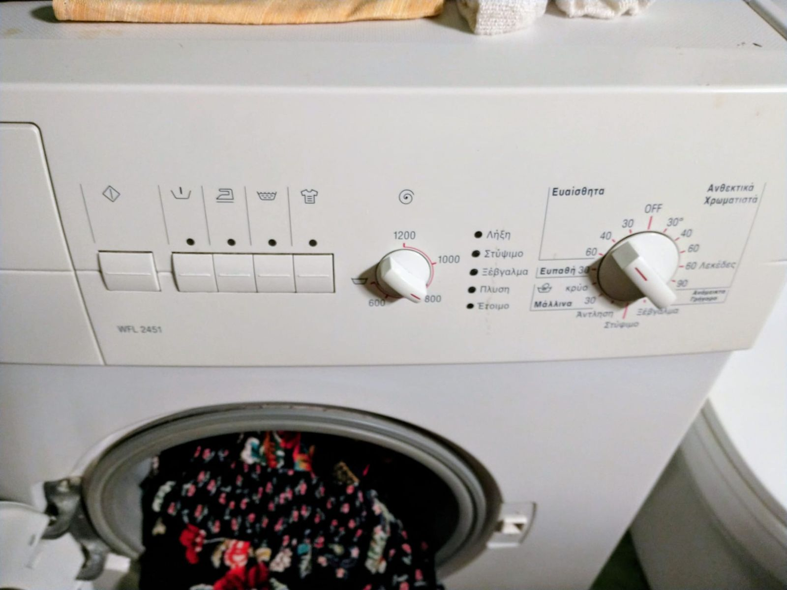
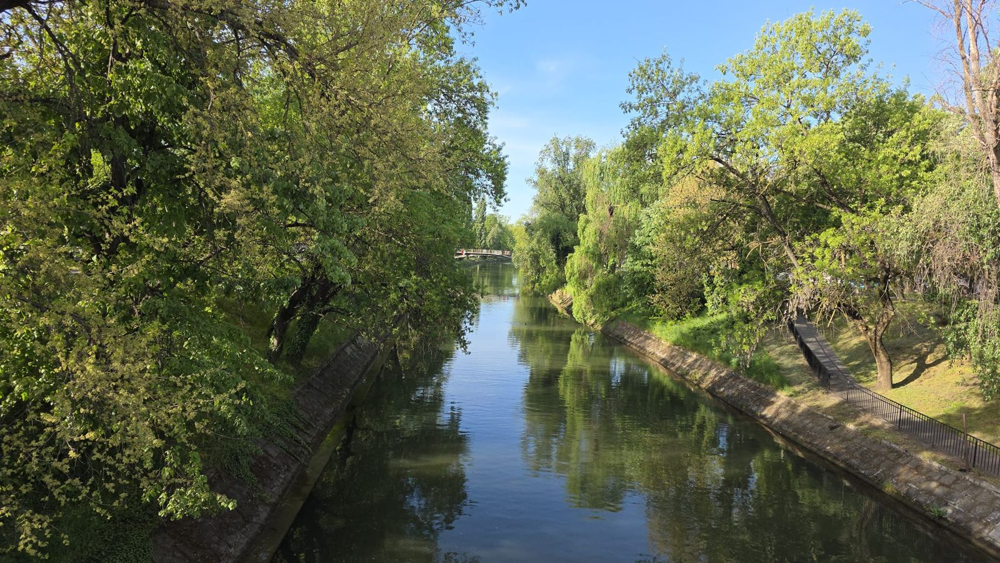
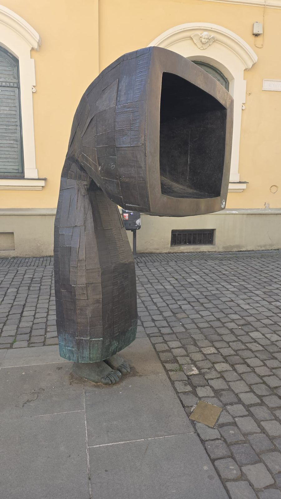
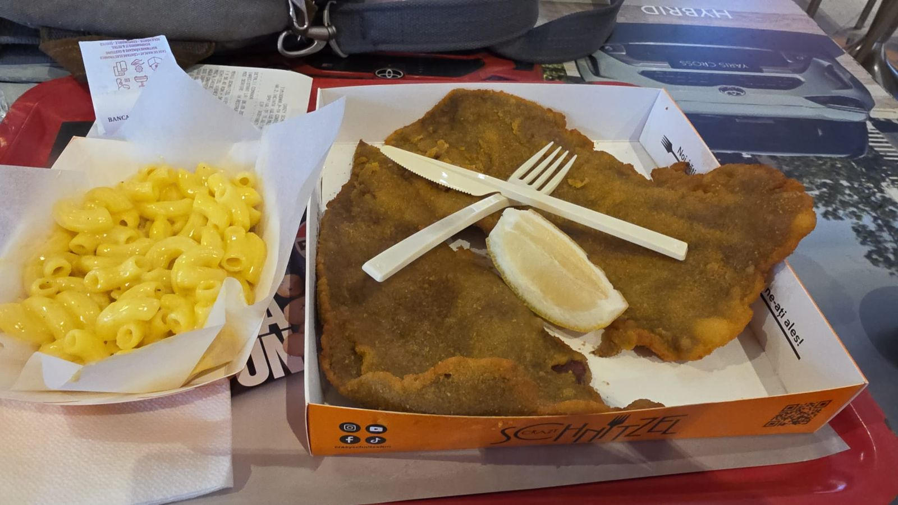

Journey 07 · Romania Note 1 of 7 Field Note
Learning to Orient While Abroad
One of the unexpected lessons of being abroad is how often I have to intentionally slow down and orient myself.
Sometimes that means something simple: figuring out a washing machine, reading a sign on a building, ordering coffee in Romanian, or trying to understand which oven setting will properly cook a frozen pizza. Other times, it means navigating larger systems: appointments, documents, travel schedules, and processes that refuse to move in a straight line.

Living and studying in Romania through Erasmus has reminded me that learning does not only happen in classrooms, conferences, or formal academic spaces. It also happens in the ordinary moments when I realize I do not fully understand the system I am standing inside. From seemingly small things like waiting room etiquette to larger challenges like navigating insurance companies in a foreign environment, I am constantly learning, adapting and thinking about how I can help make this experience easier for the next Erasmus scholar from Gonzaga.
Those moments can be frustrating, anxiety-inducing, and confusing. They can also be clarifying.

When I am in a new place, I have to pay attention differently. I notice what is visible and what is missing. I ask what matters most right now. I look for the next available path, even if it is imperfect. I act, adjust, and reflect. In many ways, this has become a lived version of the leadership questions I have been working with academically: how do we make good judgments when the context is unfamiliar, incomplete, or changing?

That question has followed me in my travels across Europe these few months, from Timișoara to Kraków to Florence. It shows up in my research, travel, language learning, and daily problem-solving. It also reminds me that leadership is not only about having the right answer in advance. More often, it is about developing the capacity to pause, read the situation, ask better questions, and move forward with care.
Being abroad has stretched me in practical ways, but it has also sharpened my thinking. It has made leadership feel less abstract and more embodied. Sometimes judgment begins with theory. Sometimes it begins with standing on a street corner, phone in hand, trying to figure out how to open a door.

Originally published at fieldnotesfromabroad.com/2026/05/10/learning-to-orient-while-abroad/